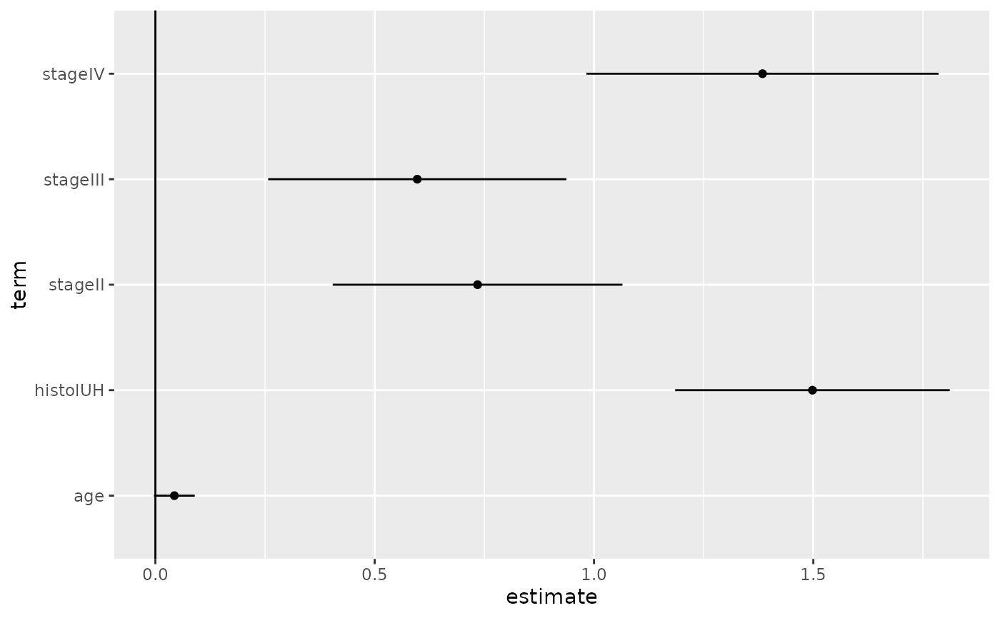

Tidy summarizes information about the components of a model. A model component might be a single term in a regression, a single hypothesis, a cluster, or a class. Exactly what tidy considers to be a model component varies across models but is usually self-evident. If a model has several distinct types of components, you will need to specify which components to return.
Usage
# S3 method for cch
tidy(x, conf.level = 0.95, ...)Arguments
- x
An
cchobject returned fromsurvival::cch().- conf.level
confidence level for CI
- ...
Additional arguments. Not used. Needed to match generic signature only. Cautionary note: Misspelled arguments will be absorbed in
..., where they will be ignored. If the misspelled argument has a default value, the default value will be used. For example, if you passconf.lvel = 0.9, all computation will proceed usingconf.level = 0.95. Two exceptions here are:
See also
Other cch tidiers:
glance.cch(),
glance.survfit()
Other survival tidiers:
augment.coxph(),
augment.survreg(),
glance.aareg(),
glance.cch(),
glance.coxph(),
glance.pyears(),
glance.survdiff(),
glance.survexp(),
glance.survfit(),
glance.survreg(),
tidy.aareg(),
tidy.coxph(),
tidy.pyears(),
tidy.survdiff(),
tidy.survexp(),
tidy.survfit(),
tidy.survreg()
Value
A tibble::tibble() with columns:
- conf.high
Upper bound on the confidence interval for the estimate.
- conf.low
Lower bound on the confidence interval for the estimate.
- estimate
The estimated value of the regression term.
- p.value
The two-sided p-value associated with the observed statistic.
- statistic
The value of a T-statistic to use in a hypothesis that the regression term is non-zero.
- std.error
The standard error of the regression term.
- term
The name of the regression term.
Examples
# load libraries for models and data
library(survival)
# examples come from cch documentation
subcoh <- nwtco$in.subcohort
selccoh <- with(nwtco, rel == 1 | subcoh == 1)
ccoh.data <- nwtco[selccoh, ]
ccoh.data$subcohort <- subcoh[selccoh]
# central-lab histology
ccoh.data$histol <- factor(ccoh.data$histol, labels = c("FH", "UH"))
# tumour stage
ccoh.data$stage <- factor(ccoh.data$stage, labels = c("I", "II", "III", "IV"))
ccoh.data$age <- ccoh.data$age / 12 # age in years
# fit model
fit.ccP <- cch(Surv(edrel, rel) ~ stage + histol + age,
data = ccoh.data,
subcoh = ~subcohort, id = ~seqno, cohort.size = 4028
)
# summarize model fit with tidiers + visualization
tidy(fit.ccP)
#> # A tibble: 5 × 7
#> term estimate std.error statistic p.value conf.low conf.high
#> <chr> <dbl> <dbl> <dbl> <dbl> <dbl> <dbl>
#> 1 stageII 0.735 0.168 4.36 1.30e- 5 0.404 1.06
#> 2 stageIII 0.597 0.173 3.44 5.77e- 4 0.257 0.937
#> 3 stageIV 1.38 0.205 6.76 1.40e-11 0.983 1.79
#> 4 histolUH 1.50 0.160 9.38 0 1.19 1.81
#> 5 age 0.0433 0.0237 1.82 6.83e- 2 -0.00324 0.0898
# coefficient plot
library(ggplot2)
ggplot(tidy(fit.ccP), aes(x = estimate, y = term)) +
geom_point() +
geom_errorbarh(aes(xmin = conf.low, xmax = conf.high), height = 0) +
geom_vline(xintercept = 0)
